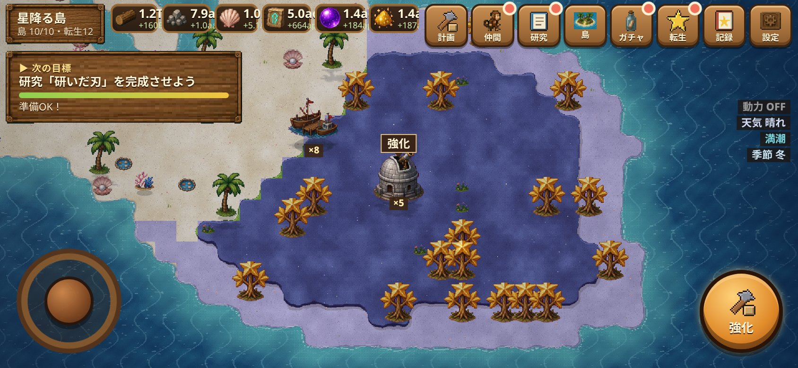
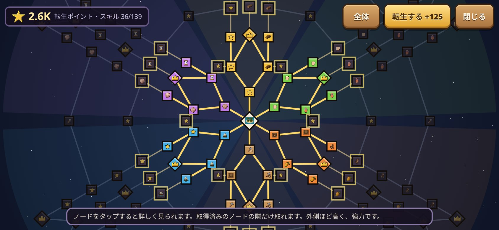
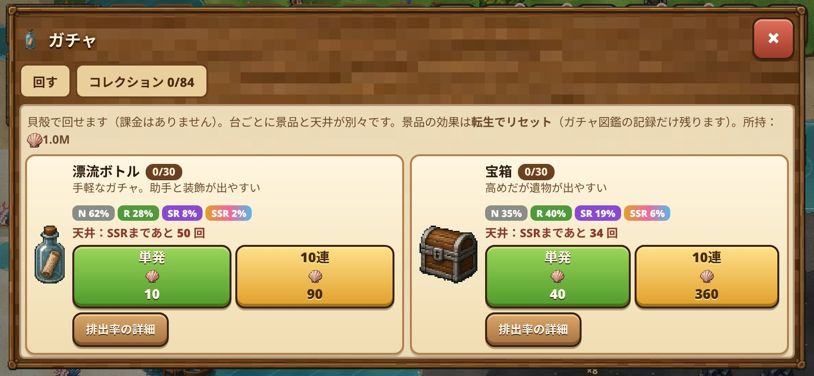
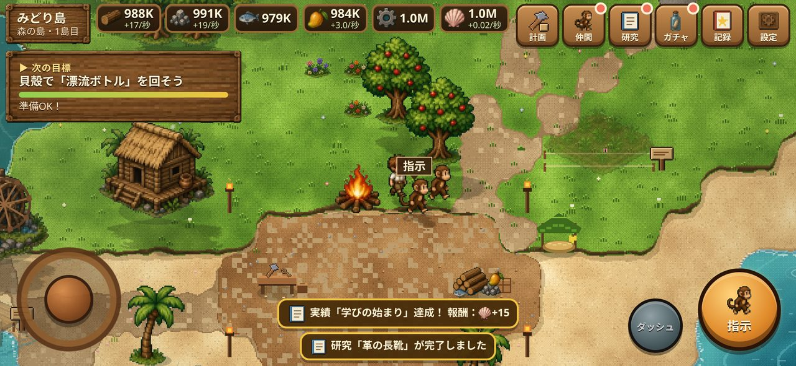

v4 転生とスキルウェブ・10の島
はじめに
島を渡りながら暮らしを広げ、行き詰まったら転生して最初からやり直し、転生ポイントでスキルウェブを広げて次はもっと遠くへ。ぜんぶで 10 の島があり、最後の島で「星の船」を完成させるとクリアです。
難しさは、転生しないとクリアできないように作ってあります。島を渡るたびに航海の費用がけた違いに上がるので、スキルと転生ポイントのボーナスを重ねないと先へ進めません。ボットのシミュレーションでは、クリアまで 約 429 時間・転生 約 159 回 でした（下の「転生の目安」）。
遊ぶ場所は 無人島スローライフ（https://saku0802.github.io/island-slowlife/）。課金・販売・SNS連携はありません。ガチャもゲーム内の貝殻だけで回します。
この攻略本の数値は、ゲーム本体のソース（tools/src/*.js）から自動で書き出しています。時間の目安は tools/sim5.js（歩く時間を省いたボット）の結果で、実際に遊ぶともっと長くかかります。
操作

スマホ
- 左下の仮想スティックで歩く。
- 地図をタップした場所へ歩く。木や岩をタップすると、近づいて作業します。
- 右下の大きなボタンでアクション。長押しで連続します。
- 研究「革の長靴」のあと、アクションボタンの左に「ダッシュ」が出ます（長押しではなくタップ）。
- 画面は横向きを想定しています。右上のボタンから計画・仲間・研究・島・ガチャ・転生（スキルウェブ）・記録・設定を開きます。
PC
- 移動：WASD または 矢印キー。クリックした場所へ歩くこともできます。
- アクション：E・スペース・Enter（押し続けると連続）。
- ダッシュ（解放後）：Shift。
- パネルを閉じる：Esc。
音（効果音・BGM）は、最初のタップやキー操作のあとから鳴ります。設定でオン／オフと音量（小・中・大）を変えられます。左上の「次の目標」をタップすると、その場所へ歩きます。研究「道しるべ」のあとは、計画の「行く」で離れた建設地点へひとっ飛びできます。
遊び方の流れ
- はじまりの森の島で、木を切り、道具を作り、猿と仲良くなって暮らしを立てる。
- メニュー「計画」の港で航海の船を5段階作ると、次の島へ航海できる。航海すると、その島は何もないところから始まります。資源（貝殻も）・施設・助手・道具・研究・装備・道と橋はリセット。残るのは転生ポイント・スキル・ガチャの景品と天井・実績と図鑑・設定、そして島の進み（転生するまで）。相棒の猿1匹は一緒に来ます。島に着くたびに転生ポイントが少しもらえ（2.8×0.15×2.2島番号×ボーナス）、新しい島はどの資源も0から。相棒の猿は1匹だけで、斧を作るまでは働きません。工房を建てるまでは「開拓中」で、スキル・ガチャ・実績・島わたりの倍率はまとめて最大×3〜×4.5（スキルの数で上がる）しか効かず、スキルでもらった研究も生産には効きません。工房を建てると全部の倍率が効きはじめます。スキル「設計図の記憶」の焚き火5基や「開拓の備え」の初期資源500などは、そのまま序盤の近道になります。
- 次の島は前より広く、新しい資源・助手・施設・研究・仕組みが加わる。前の島の地域も地図に残るので、島を渡るほど地図がにぎやかになります。
- 航海の費用が重くなって進めなくなったら、転生。転生ポイント（RP）をもらって、ほぼすべてをリセットし、はじまりの島からやり直す。
- メニュー「転生」でスキルウェブを開き、RP でノードを取る。永続の強化なので、次の周回はぐっと速く、遠くまで行ける。
上のバーの資源をタップすると、メニュー「島」の資源一覧が開きます。「島」タブには、いまの島の仕組み（坑道・季節・潮・漁船・装備・市場・寒さ・天気・発掘・星座）がまとまっています。
10の島
島ごとに地図が広くなり、新しい地域（前の島の地域も残る）と、資源・助手・施設・研究5本・仕組みが加わります。生産の倍率も島ごとにけたが上がります。

| 島（地図） | 加わるもの（資源／助手／施設／仕組み） | どんな島 |
|---|---|---|
| 1. はじまりの森の島 50×32 マス | 木・石・魚・果物・部品 猿・ロボット・ドローン 焚き火〜灯台の9施設 東の小島と古代の石碑 | 木・石・魚・果物。猿と仲良くなって、道具と施設で暮らしを立てる最初の島。 |
| 2. 洞窟の島 64×40 マス | 鉄鉱石・鉄 モグラ（助手） 坑道・溶鉱炉 坑道の深さ（10段階）・暗い洞窟 | 岩山の奥に広い坑道。鉄鉱石を掘り、炉で鉄に変える。坑道は暗く、カンテラの明かりが頼り。 |
| 3. 草原の島 72×46 マス | 小麦・布 カピバラ（助手）・羊 風車・納屋・牧場・温室 四季（春夏秋冬） | なだらかな草原と麦畑。季節がめぐり、秋は大収穫・冬は不作。羊の毛から布を織る。 |
| 4. 珊瑚礁の島 80×50 マス | 真珠・サンゴ カニ（助手） 真珠いかだ・漁港 潮の満ち引き・漁船の航海 | 潮が満ち引きする遠浅の海。干潮のときだけ干潟に渡れ、真珠貝が顔を出す。漁船を沖へ送り出せる。 |
| 5. 火山の島 86×54 マス | 黒曜石・合金 火トカゲ（助手） 鍛冶場・地熱炉 噴火・装備づくり（3種） | 煙を上げる火山と溶岩の大地。ときどき噴火して黒曜石が降る。鍛冶場で合金と自分の装備を作る。 |
| 6. 交易の島 92×58 マス | 金貨・香辛料 オオハシ商人（助手） 市場・香辛料の倉 相場の変わる市場・交易の依頼 | 各地の船が集まる港町。相場が動く市場で資源を売り買いし、依頼をこなして金貨を稼ぐ。 |
| 7. 雪の島 98×62 マス | 氷・水晶 シロクマ（助手）・ペンギン 山小屋・氷室・水晶坑 暖かさ（寒いと生産が落ちる）・吹雪 | 一面の銀世界。寒さで仲間の手がかじかむので、暖炉の山小屋で島を暖める。氷の下に水晶が眠る。 |
| 8. 嵐の島 104×66 マス | 電力 雷雲（助手） 避雷塔・風車塔・蓄電庫 天気（晴れ・強風・雷雨）・動力ブースト | 天気がくるくる変わる高原。雷雨は避雷塔、強風は風車塔で電力に変え、蓄電池から機械を動かす。 |
| 9. 古代遺跡の島 110×70 マス | 遺物の欠片・魔力 ゴーレム（助手） 発掘場・魔法陣・図書館・ゴーレム工房 発掘（層を掘る）・古代の遺物8種 | 苔むした石の都。発掘現場を層ごとに掘り下げ、古代の遺物をそろえる。水晶から魔力を引き出す魔法陣も。 |
| 10. 星降る島 116×74 マス | 星屑（夜に多く取れる） 星の妖精（助手） 天文台 星座（6つ）・最後の航海「星の船」 | 夜になると星屑が降りそそぐ最後の島。天文台で星座を結び、星の船で空の海へ。 |
航海（次の島へ渡る船）
港で5段階の船を順に作ります。費用はスキル「航海」の枝で下げられます。下の表はスキルなしの費用です。
| 島 | 1 | 2 | 3 | 4 | 5 |
|---|---|---|---|---|---|
| 1. 森の島 | 竜骨 木 1.0M・石 300K | 船体 木 1.0B・部品 100K | ヤシ繊維の帆 果物 100B・魚 30.0B | 舵と錨 石 500B・部品 100M | 食料と水 魚 40.0T・果物 60.0T |
| 2. 洞窟の島 | 鉄の竜骨 鉄 52.3ab・木 1.7aa | 鉄板の船体 鉄 14.4ac・石 4.8ab | トロッコの線路 鉄鉱石 3.9ad・鉄 3.9ad | ボイラー 鉄 1.0ae・部品 10.9ab | 石炭と食料 鉄鉱石 301ae・魚 3.0ad |
| 3. 草原の島 | 麦わらの断熱材 小麦 8.5ad・鉄 1.7ac | 帆布 布 1.8ae・木 612ac | 保存食 小麦 392ae・果物 130ad | 羊毛の毛布 布 83.9af・鉄 558ad | 大きな帆 布 17.9ag・小麦 17.9ag |
| 4. 珊瑚礁の島 | 真珠の羅針盤 真珠 9.9ag・布 2.1af | サンゴの防波板 サンゴ 7.3ah・鉄 1.0af | 漁網 魚 16.4ag・布 119ag | 真珠の装飾 真珠 4.0aj・サンゴ 1.3aj | 大航海の備え 真珠 3.0ak・魚 902ah |
| 5. 火山の島 | 合金の船首 合金 68.8ai・鉄 47.7ae | 耐熱の船底 黒曜石 70.4aj・合金 23.4aj | 黒曜石の錨 黒曜石 72.1ak・石 216ah | 鍛造の歯車 合金 73.8al・鉄 511ag | 火山の炎 黒曜石 75.5am・合金 75.5am |
| 6. 交易の島 | 金の契約書 金貨 1.8al・布 1.0ah | 香辛料の積み荷 香辛料 3.3am・金貨 1.1am | 商船の旗 金貨 6.0an・真珠 50.2ak | 大商会の後ろ盾 金貨 10.6ao・香辛料 10.6ao | 金貨の山 金貨 18.9ap・合金 300an |
| 7. 雪の島 | 氷の砕氷板 氷 2.4ap・合金 45.0am | 毛皮の帆 布 271ak・氷 14.3aq | 水晶の灯り 水晶 7.4ar・氷 748ar | 暖炉つき船室 氷 13.0at・木 3.5ap | 極光の羅針盤 水晶 226au・氷 226au |
| 8. 嵐の島 | 避雷マスト 電力 7.1as・合金 1.3ao | 電動スクリュー 電力 432at・合金 82.7ap | 嵐よけの船体 合金 4.9ar・水晶 274at | 大容量の電池 電力 1.5ax・水晶 16.5av | 稲妻の帆 電力 94.6ay・布 6.2ar |
| 9. 遺跡の島 | 古代の羅針 遺物の欠片 24.9ay・電力 22.7ax | ルーンの船体 魔力 164ba・遺物の欠片 54.9ba | ゴーレムの漕ぎ手 遺物の欠片 1.0bd・石 794ax | 魔力の帆 魔力 7.1bf・水晶 68.9bc | いにしえの海図 遺物の欠片 47.5bh・魔力 47.5bh |
| 10. 星の島 | 星の竜骨 星屑 517bd・魔力 340bc | 銀河の船体 星屑 149bg・合金 17.1ba | 星座の帆 星屑 43.0bj・遺物の欠片 28.3bi | 流れ星の舵 星屑 12.4bm・電力 7.4bk | 夜明けの船出 星屑 3.5bp・魔力 2.3bo |
表の数字は、島の番号が上がるごとに大きくなる「航海の壁」込みです。島の終盤ほど壁が厚く、スキルと転生のボーナスがないとまず届きません。
転生
港の画面かスキルウェブの「転生する」から。その周回で航海の船を1段階でも進めていれば転生できます。
残るもの・リセットされるもの
- 残る：転生ポイント、スキルウェブで取ったノード、実績、図鑑（魚・漂流物・ガチャ景品の記録）、統計、設定。
- リセット：資源（貝殻も）、施設、助手、道具、研究、道と橋、航海の船、いる島（はじまりの島に戻る）、猿クエスト、ガチャの景品とその効果、天井カウント。
- 島を渡ったときとの違い：航海ではガチャの景品と天井、島の進みが残ります。転生ではそれも含めてリセットされ、その代わりに転生ポイントがまとめて入ります。
- 例外はスキルで取ったものだけ：「貝の記憶」は貝殻の半分とガチャ景品（Lv1）を残す、「猿の友情」は最初から猿が仲間、「航海の記憶」「伝説の海図」は洞窟の島／珊瑚礁の島から始められる、など。
実績と図鑑の記録（と、そのささやかな全生産ボーナス）は残します。ガチャ景品は図鑑に「出たことがある」記録だけが残り、効果は残りません。
転生ポイントの式
RP ＝ 2.8 ×（2.2到達 − 2.2出発）× スキルのボーナス（小数は切り捨て、最低 1）
- 到達 ＝ いまの島の番号（森＝0〜星＝9）＋ 船の段階 ÷ 5
- 出発 ＝ その周回を始めた島の番号（ふつうは 0。スキルで洞窟・珊瑚礁から始めた場合は 1・3）
- 遠くへ行くほど指数で増えます（1島進むごとに約 2.2 倍）。スキル「航海」の枝の「転生ポイント」ノードと「記憶の海」「伝説の海図」で倍率が上がります。
早見表（スキルのボーナスなし・森から出発）
| 島 | 船1段階 | 船3段階 | 船5段階（=次の島に着いたのと同じ） |
|---|---|---|---|
| 森の島 | 1 | 1 | 3 |
| 洞窟の島 | 4 | 7 | 10 |
| 草原の島 | 13 | 18 | 27 |
| 珊瑚礁の島 | 32 | 45 | 62 |
| 火山の島 | 73 | 102 | 141 |
| 交易の島 | 166 | 228 | 314 |
| 雪の島 | 368 | 506 | 695 |
| 嵐の島 | 814 | 1.1K | 1.5K |
| 遺跡の島 | 1.7K | 2.4K | 3.3K |
| 星の島 | 3.9K | 5.4K | 7.4K |
転生の目安（島ごとの関門）
島ごとに「この島へ着くには、だいたいこれだけ転生とスキルが必要」という壁があります。下は tools/sim5.js のボット（買えるものをすぐ買い、2時間進めなくなったら転生、安いスキルから取る）が、初めてその島に着いた周回です。
| 島 | それまでの転生回数 | 取っていたスキル数 | そこまでの合計時間 |
|---|---|---|---|
| 1. はじまりの森の島 | 最初から | 0 | 0 |
| 2. 洞窟の島 | 0 回（1周目で届く） | 6 | 約 3 時間 |
| 3. 草原の島 | 約 30 回 | 42 | 約 87 時間 |
| 4. 珊瑚礁の島 | 約 46 回 | 66 | 約 131 時間 |
| 5. 火山の島 | 約 54 回 | 76 | 約 161 時間 |
| 6. 交易の島 | 約 60 回 | 85 | 約 179 時間 |
| 7. 雪の島 | 約 71 回 | 111 | 約 207 時間 |
| 8. 嵐の島 | 約 78 回 | 122 | 約 228 時間 |
| 9. 古代遺跡の島 | 約 116 回 | 144 | 約 317 時間 |
| 10. 星降る島 | 約 125 回 | 144 | 約 345 時間 |
| クリア（星の船で出航） | 約 159 回 | 144 | 約 429 時間 |
後半（島7〜10）は特に壁が厚く、島7から星の船までで約 222 時間かかります。
目安です。実際に遊ぶと歩く時間やメニュー操作のぶん長くなり、スキルの選び方で前後します。どの壁も「何もできない時間」にはならず、転生するたびにRPがたまり、スキルが増えて少しずつ先へ届くように作っています。
スキルウェブ
中心の「漂流者の記憶」から6本の枝が外へ伸び、隣の枝とは橋でつながる網です。ぜんぶで 145 ノード・186 本のつながり。取得済みのノードの隣だけ取れます。ドラッグで移動、ホイール／ピンチで拡大、タップで選んで「取る」。

- リング（中心からの距離）1〜8：基本の値段 1・3・10・30・100・300・1000・3000 RP。外ほど高く強い。
- キーストーン（ひし形）は値段 ×3、いちばん外の2つずつ（王冠）は ×2。
- 橋（枝と枝のあいだ）：18個。転生ポイント・全生産・施設コスト。
- ぜんぶ取ると 235K RP。シムのクリア時点で 144 / 145。
- 取ったノードの数そのものにもボーナス（1つごとに全生産 ×1.03）。
- 果ての記憶（各枝のいちばん外・6つ）：何度でもレベルを上げられるノード。雪の島（島7）に一度着くと解放。値段は 20000 RP から 1レベルごとに ×1.5。全生産 ×1.6／手 ×2・全生産 ×1.25／助手 ×1.6／施設 ×1.6／航海のコスト ×0.8／転生ポイント ×1.2（1レベルごと）。後半の壁で行き止まりにならないための伸びしろです。
| 枝 | ノード | キーストーンと外周 |
|---|---|---|
| 豊穣 | 21 | 豊穣の記憶（30）：全生産 ×3 黄金律（300）：取ったスキル1つごとに全生産 +6% 創世の力（3.0K）：全生産 ×25 大地の恵み（6.0K）：全生産 ×4 百倍の実り（6.0K）：木・石・魚・果物 ×100 永劫の実り（20.0K）：全生産 ×1.6（1レベルごと・何度でも取れる） |
| 手と足 | 21 | 熟練の手（30）：自動採取 +2回/秒（そばの資源を集め続ける） 風の足（300）：転生直後から 草履・長靴・道しるべ を習得済み 万能の手（3.0K）：手で集める量 ×20・自動採取 +6回/秒 神速（6.0K）：歩く速さ +50%・ダッシュの再使用が早い 黄金の指（6.0K）：手で集める量 ×10 尽きぬ手（20.0K）：手で集める量 ×2・全生産 ×1.25（1レベルごと・何度でも取れる） |
| 仲間 | 21 | 猿の友情（30）：転生直後から猿が1匹仲間（クエストを飛ばす） 群れの長（300）：助手 ×4・自動雇用が最初から使える 大家族（3.0K）：助手の25体ごとのボーナス ×2→×3 猿の王（6.0K）：猿 ×50 島の守り手（6.0K）：助手 ×5 千の仲間（20.0K）：助手 ×1.6（1レベルごと・何度でも取れる） |
| 建築 | 21 | 設計図の記憶（30）：施設の自動建設が最初から使える・焚き火5基を持って始まる 職人魂（300）：施設・助手の値上がり幅 −25% 巨匠（3.0K）：施設の25基ごとのボーナス ×2→×3 都市計画（6.0K）：施設 ×5 匠の倉（6.0K）：施設・助手のコスト ×0.1 終わらぬ都（20.0K）：施設 ×1.6（1レベルごと・何度でも取れる） |
| 航海 | 21 | 航海士（30）：航海のコスト ×0.3 航海の記憶（300）：転生後は「洞窟の島」から始められる 伝説の海図（3.0K）：転生後は「珊瑚礁の島」から始められる・転生ポイント ×2 星の導き（6.0K）：航海のコスト ×0.2 記憶の海（6.0K）：転生ポイント ×3 果ての羅針盤（20.0K）：航海のコスト ×0.8（1レベルごと・何度でも取れる） |
| 幸運 | 21 | 貝の記憶（30）：転生しても貝殻の半分とガチャ景品（Lv1）が残る 研究の記憶（300）：転生後、はじまりの島の第1〜3段階の研究を習得済み 時の砂（3.0K）：オフライン上限 +48時間・オフライン収穫 ×2・天井 −25% 幸運の女神（6.0K）：ガチャの天井 −50%・貝殻 ×5 暖炉の記憶（6.0K）：雪の島の暖かさ ×2・寒さに強い 巡る星（20.0K）：転生ポイント ×1.2（1レベルごと・何度でも取れる） |
小さなノードの種類
全生産（7）、木・石・魚・果物（8）、手で集める量（7）、歩く速さ（8）、猿の信頼 I（1）、猿の信頼 II（1）、助手のコスト（8）、助手の生産（5）、施設の生産（7）、開拓の備え（1）、施設のコスト（7）、航海のコスト（7）、転生ポイント（8）、貝殻（6）、漂着の目（1）、オフライン上限（8）
ガチャ（貝殻のみ・課金なし）
台は 11 種類。島を進めるとその土地の台が開き、台ごとに景品と天井（そのSSRまでの回数）が別々です。景品は全部で 96 種。同じ景品が出るとレベルが上がって効果が強くなります。

| 台 | 解放 | 値段 | N / R / SR / SSR / LEGEND / CHAOS | 天井 | 景品 |
|---|---|---|---|---|---|
| 漂流ボトル | 最初から | 貝殻 10 / 10連 90 | 62% / 28% / 8% / 2% / 0% / 0% | 60 回（SSR確定） | 30 種 |
| 宝箱 | 最初から | 貝殻 40 / 10連 360 | 35% / 40% / 19% / 6% / 0% / 0% | 40 回（SSR確定） | 30 種 |
| 坑道のトロッコ | 洞窟の島（島2）に着く | 貝殻 60 / 10連 540 | 55% / 30% / 11% / 4% / 0% / 0% | 50 回（SSR確定） | 10 種 |
| 人魚の貝殻 | 珊瑚礁の島（島4）に着く | 貝殻 120 / 10連 1080 | 55% / 30% / 11% / 4% / 0% / 0% | 50 回（SSR確定） | 10 種 |
| 交易商の木箱 | 交易の島（島6）に着く | 貝殻 250 / 10連 2250 | 55% / 30% / 11% / 4% / 0% / 0% | 50 回（SSR確定） | 10 種 |
| 古代の封印箱 | 嵐の島（島8）に着く | 貝殻 500 / 10連 4500 | 55% / 30% / 11% / 4% / 0% / 0% | 50 回（SSR確定） | 10 種 |
| 流れ星の福袋 | 星降る島（島10）に着く | 貝殻 900 / 10連 8100 | 50% / 30% / 13% / 7% / 0% / 0% | 40 回（SSR確定） | 6 種 |
| 仲間の衣装箱 | 猿が仲間になる | 貝殻 80 / 10連 720 | 50% / 32% / 13% / 5% / 0% / 0% | 45 回（SSR確定） | 8 種 |
| 黄金の宝箱 | どの台でも合計30回引く | 貝殻 400 / 10連 3600 | 0% / 45% / 38% / 17% / 0% / 0% | 20 回（SSR確定） | 開いている全部の台の景品（N なし） |
| 伝説の宝箱 | 黄金の宝箱を20回引く／珊瑚礁の島（島4）に着く | 貝殻 3000 / 10連 27000 | 0% / 0% / 45% / 44% / 10.5% / 0.5% | 60 回（レジェンダリー以上確定） | 42 種 |
| 混沌の裂け目 | 雪の島（島7）に着き、伝説の宝箱を10回引く | 貝殻 15000 / 10連 135000 | 0% / 0% / 0% / 55% / 40% / 5% | 40 回（レジェンダリー以上確定） | 42 種 |
- 天井は、市場の数（最大 −30%）とスキル「時の砂」「幸運の女神」で短くなります。
- 黄金の宝箱は N が出ず、開いている台すべての景品から出ます。
- v5.1：SSRの上にレジェンダリー（LEGEND）とカオス（CHAOS）。黄金の宝箱の上に「伝説の宝箱」（60回でレジェンダリー以上確定、カオス0.5%）と、いちばん高い「混沌の裂け目」（SSR以上のみ、40回でレジェンダリー以上確定、カオス5%）があります。開けるときの光・揺れ・音が特別です。最大Lvでかぶると貝殻 400（レジェンダリー）／2000（カオス）が戻ります。
- ガチャの景品と効果、天井は島を渡っても残ります。転生するとリセットされます。図鑑の「ガチャ」には出たことのある景品が記録として残ります（効果なし）。スキル「貝の記憶」を取ると、景品を Lv1 で持ち越せます。
景品一覧
漂流ボトル・宝箱（30 種）
| 景品 | レア | 効果（Lv1） |
|---|---|---|
| ヤドカリ | N | 貝殻 +5% |
| ニワトリ | N | 果物 +10% |
| オウム | R | 毎秒1回 自動採取 |
| ペンギン | R | 魚 +15% |
| カメ | R | オフライン +1時間 |
| ラッコ | SR | 魚 +30%・貝殻 +10% |
| フラミンゴ | SR | 木 +25%・果物 +25% |
| イルカ | SR | イベント頻度 +10%・全生産 +5% |
| クジラ | SSR | 全生産 +30% |
| 島の精霊 | SSR | 助手の生産 +50%・毎秒2回 自動採取 |
| ヤシの木 | N | 木 +5% |
| 花壇 | N | 果物 +5% |
| 石灯籠 | N | 石 +5% |
| 貝の風鈴 | N | 貝殻 +3% |
| ビーチパラソル | R | 全生産 +3% |
| 石像 | R | 石 +15% |
| カヌー | R | 魚 +10% |
| 噴水 | SR | 全生産 +8% |
| 砂のお城 | SR | 全生産 +5%・手で採取 +20% |
| 虹のアーチ | SSR | 全生産 +20% |
| 古いコイン | N | 全生産 +2% |
| 錆びた鍵 | N | 貝殻 +5% |
| 船乗りの方位磁針 | R | 全生産 +5% |
| 漁師のお守り | R | 魚 +20% |
| 真鍮の歯車 | R | 部品 +20% |
| 黄金の釣り針 | SR | 魚 +40%・手で採取 +20% |
| 星の砂時計 | SR | オフライン +2時間・全生産 +5% |
| 職人のハンマー | SR | 施設の生産 +25% |
| 海神の三叉槍 | SSR | 全生産 +50% |
| 王家の冠 | SSR | 全生産 +25%・貝殻 +25% |
坑道のトロッコ（10 種）
| 景品 | レア | 効果（Lv1） |
|---|---|---|
| 坑夫のランプ | N | 鉄鉱石 +8% |
| 小さなトロッコ | N | 鉄 +6% |
| 麦わらのお守り | N | 小麦 +8% |
| カウベル | R | 布 +15% |
| 子もぐら | R | 助手の生産 +6% |
| 鋼のつるはし | R | 手で採取 +25%・石 +10% |
| 晶洞石 | SR | 全生産 +6%・鉄鉱石 +20% |
| もこもこ羊 | SR | 布 +30%・小麦 +20% |
| 黄金のドリル | SSR | 鉄 +60%・施設の生産 +20% |
| 豊作の女神像 | SSR | 全生産 +25%・小麦 +50% |
人魚の貝殻（10 種）
| 景品 | レア | 効果（Lv1） |
|---|---|---|
| ヒトデ | N | サンゴ +8% |
| 大あさり | N | 真珠 +6% |
| 溶岩の小石 | N | 黒曜石 +8% |
| ガラスの浮き球 | R | 魚 +20% |
| 子ガニ | R | 貝殻 +8% |
| 耐熱の手袋 | R | 合金 +12% |
| 真珠の首飾り | SR | 真珠 +30%・貝殻 +10% |
| 火トカゲの子 | SR | 黒曜石 +25%・合金 +20% |
| 竜宮の玉手箱 | SSR | 全生産 +30%・オフライン +2時間 |
| 火山の心臓 | SSR | 全生産 +20%・施設の生産 +25% |
交易商の木箱（10 種）
| 景品 | レア | 効果（Lv1） |
|---|---|---|
| 異国の金貨 | N | 金貨 +8% |
| 香辛料の壺 | N | 香辛料 +8% |
| 毛糸の手袋 | N | 氷 +6% |
| 船長の望遠鏡 | R | イベント頻度 +10%・金貨 +10% |
| 子ペンギン | R | 魚 +15%・氷 +10% |
| 商人の天秤 | R | 貝殻 +10%・香辛料 +10% |
| オーロラの欠片 | SR | 水晶 +30%・全生産 +5% |
| 子グマ | SR | 助手の生産 +12%・木 +30% |
| 商王の冠 | SSR | 全生産 +30%・金貨 +40% |
| 雪の女王の涙 | SSR | 全生産 +20%・水晶 +50% |
古代の封印箱（10 種）
| 景品 | レア | 効果（Lv1） |
|---|---|---|
| 小さな避雷針 | N | 電力 +8% |
| 石板のかけら | N | 遺物の欠片 +6% |
| ルーン石 | N | 魔力 +6% |
| 雷カブト | R | 電力 +20% |
| 銅のコイル | R | 施設の生産 +8% |
| 古代の仮面 | R | 遺物の欠片 +15%・手で採取 +15% |
| ちび雲 | SR | 電力 +30%・毎秒1回 自動採取 |
| ちびゴーレム | SR | 石 +40%・助手の生産 +10% |
| 嵐の王笏 | SSR | 全生産 +35% |
| 失われた魔導書 | SSR | 魔力 +50%・全生産 +15% |
流れ星の福袋（6 種）
| 景品 | レア | 効果（Lv1） |
|---|---|---|
| 星くずの小瓶 | N | 星屑 +6% |
| 星の苗木 | N | 星屑 +4%・木 +10% |
| 星の妖精 | R | 全生産 +4% |
| 星図 | R | 星屑 +15% |
| 彗星のかけら | SR | 全生産 +10%・星屑 +20% |
| 星の船の模型 | SSR | 全生産 +50%・オフライン +4時間 |
仲間の衣装箱（8 種）
| 景品 | レア | 効果（Lv1） |
|---|---|---|
| 麦わら帽子 | N | 助手の生産 +4% |
| 赤いスカーフ | N | 助手の生産 +3%・手で採取 +5% |
| 早足ブーツ | R | 助手の生産 +8% |
| 力の指輪 | R | 助手の生産 +6%・施設の生産 +4% |
| ヘッドランプ | SR | 助手の生産 +18% |
| 琥珀のブローチ | SR | 助手の生産 +12%・貝殻 +8% |
| 英雄のマント | SSR | 助手の生産 +50% |
| 島長のバッジ | SSR | 助手の生産 +30%・全生産 +10% |
レジェンダリー（伝説の宝箱・混沌の裂け目）（8 種）
| 景品 | レア | 効果（Lv1） |
|---|---|---|
| 海王の大三叉槍 | LEGEND | 全生産 +80%・魚 +100% |
| 白鯨の王 | LEGEND | 全生産 +60%・助手の生産 +80% |
| 世界樹の若木 | LEGEND | 全生産 +60%・木 +150%・果物 +150% |
| 太陽の精霊 | LEGEND | 毎秒4回 自動採取・手で採取 +100% |
| 七つの海の王冠 | LEGEND | 全生産 +70%・貝殻 +60% |
| 永遠の砂時計 | LEGEND | オフライン +6時間・全生産 +40% |
| 巨人の金槌 | LEGEND | 施設の生産 +100%・助手の生産 +40% |
| 天空の虹橋 | LEGEND | 全生産 +90% |
カオス（伝説の宝箱 0.5%・混沌の裂け目 5%）（4 種）
| 景品 | レア | 効果（Lv1） |
|---|---|---|
| 混沌の核 | CHAOS | 全生産 +250% |
| 終わらない嵐の瞳 | CHAOS | 全生産 +150%・施設の生産 +150%・助手の生産 +150% |
| 落ちてきた星の心臓 | CHAOS | 全生産 +200%・貝殻 +150% |
| 時を喰う遺物 | CHAOS | 全生産 +150%・オフライン +12時間・毎秒6回 自動採取 |
施設・助手・研究
| 島 | 施設 | 助手 | 研究 |
|---|---|---|---|
| 森の島 | 焚き火・畑・桟橋・採石場・小屋・水車・工房・見張り台・灯台 | 猿・ロボット・ドローン | 28 本 |
| 洞窟の島 | 坑道・溶鉱炉 | モグラ | 5 本 |
| 草原の島 | 風車・納屋・牧場・温室 | カピバラ | 5 本 |
| 珊瑚礁の島 | 真珠いかだ・漁港 | カニ | 5 本 |
| 火山の島 | 鍛冶場・地熱炉 | 火トカゲ | 5 本 |
| 交易の島 | 市場・香辛料の倉 | オオハシ商人 | 5 本 |
| 雪の島 | 山小屋・氷室・水晶坑 | シロクマ | 5 本 |
| 嵐の島 | 避雷塔・風車塔・蓄電庫 | 雷雲 | 5 本 |
| 遺跡の島 | 発掘場・魔法陣・図書館・ゴーレム工房 | ゴーレム | 5 本 |
| 星の島 | 天文台 | 星の妖精 | 5 本 |
研究は全部で 73 本。はじまりの島の分は前の版と同じ流れで、2つ目の島から先は島ごとに5本ずつです。
島の研究（基本コスト）
| 島 | 研究 | 効果 | コスト |
|---|---|---|---|
| 洞窟の島 | 鉱脈探し | 鉄鉱石 ×2 | 鉄鉱石 300・木 2.0K |
| 洞窟の島 | ふいご | 溶鉱炉 ×2 | 鉄 200・石 3.0K |
| 洞窟の島 | カンテラ | 洞窟が明るくなる・モグラ ×3 | 鉄 600・魚 5.0K |
| 洞窟の島 | 鉄の道具 | 道具1Lvごとの生産倍率 1.25→1.32 | 鉄 2.0K・木 30.0K |
| 洞窟の島 | 坑道の補強 | 坑道の深さの上限 +5 | 鉄 5.0K・石 50.0K |
| 草原の島 | 輪作 | 小麦 ×2 | 小麦 500・果物 10.0K |
| 草原の島 | 羊の品種改良 | 布 ×2 | 布 300・小麦 2.0K |
| 草原の島 | 暦 | 秋が長く冬が短くなる | 小麦 3.0K・鉄 2.0K |
| 草原の島 | 村の寄り合い | すべての助手 ×2 | 布 2.0K・果物 50.0K |
| 草原の島 | 製粉 | 果物 ×3・カピバラ ×2 | 小麦 10.0K・布 3.0K |
| 珊瑚礁の島 | 真珠の養殖 | 真珠 ×2 | 真珠 200・布 5.0K |
| 珊瑚礁の島 | 潮汐表 | 干潮が長くなる | サンゴ 800・魚 100K |
| 珊瑚礁の島 | 遠洋航海 | 漁船の収穫 ×2・航海時間 −30% | 真珠 800・鉄 20.0K |
| 珊瑚礁の島 | 珊瑚の庭 | サンゴ ×2・魚 ×3 | サンゴ 3.0K・布 20.0K |
| 珊瑚礁の島 | 素潜り | 手で集める量 ×3 | 真珠 3.0K・サンゴ 5.0K |
| 火山の島 | 鍛造 | 合金 ×2 | 合金 200・鉄 50.0K |
| 火山の島 | 耐熱服 | 噴火で降る黒曜石 ×2 | 黒曜石 2.0K・布 50.0K |
| 火山の島 | 地熱発電 | 地熱炉の施設ボーナス 5%→12% | 黒曜石 5.0K・サンゴ 20.0K |
| 火山の島 | 名工の鎚 | 装備の最大Lv +5 | 合金 3.0K・真珠 10.0K |
| 火山の島 | 火山灰の肥料 | 小麦・果物 ×3 | 黒曜石 20.0K・小麦 200K |
| 交易の島 | 簿記 | 金貨 ×2 | 金貨 500・布 100K |
| 交易の島 | 航路図 | 依頼の報酬 ×2 | 金貨 2.0K・真珠 30.0K |
| 交易の島 | 相場師 | 市場の売値 +25%・買値 −20% | 金貨 5.0K・香辛料 3.0K |
| 交易の島 | 香辛料の道 | 香辛料 ×2・オオハシ ×3 | 香辛料 10.0K・合金 10.0K |
| 交易の島 | 両替商 | 貝殻の獲得 ×2・全生産 ×2 | 金貨 30.0K・香辛料 30.0K |
| 雪の島 | 断熱 | 必要な暖かさ −30% | 氷 1.0K・布 300K |
| 雪の島 | 氷室の技 | 氷 ×2 | 氷 3.0K・木 10.0M |
| 雪の島 | 結晶学 | 水晶 ×2 | 水晶 1.0K・鉄 300K |
| 雪の島 | 犬ぞり | 歩く速さ +20% | 氷 8.0K・魚 100M |
| 雪の島 | オーロラ観測 | 夜の全生産 ×3 | 水晶 10.0K・氷 30.0K |
| 嵐の島 | 避雷針の改良 | 避雷塔 ×2 | 電力 500・合金 50.0K |
| 嵐の島 | 大容量電池 | 蓄電の上限 ×4 | 電力 2.0K・水晶 20.0K |
| 嵐の島 | 送電網 | 動力ブースト ×2→×3 | 電力 6.0K・鉄 10.0M |
| 嵐の島 | 気象予報 | 雷雨と強風が長く続く | 電力 20.0K・布 10.0M |
| 嵐の島 | 発電所 | 電力 ×2・雷雲 ×3 | 電力 60.0K・合金 300K |
| 遺跡の島 | 碑文解読 | 遺物の欠片 ×2 | 遺物の欠片 500・電力 100K |
| 遺跡の島 | ルーン魔術 | 魔力 ×2 | 魔力 500・水晶 100K |
| 遺跡の島 | ゴーレム工学 | ゴーレム ×3 | 遺物の欠片 3.0K・石 1.0B |
| 遺跡の島 | 古代の地図 | 発掘の掘る速さ ×2 | 遺物の欠片 10.0K・金貨 100K |
| 遺跡の島 | 叡智の図書館 | 全生産 ×3 | 魔力 30.0K・遺物の欠片 30.0K |
| 星の島 | 星図の読解 | 星屑 ×2 | 星屑 500・魔力 100K |
| 星の島 | 天体望遠鏡 | 星座のコスト −40% | 星屑 2.0K・合金 10.0M |
| 星の島 | 流星群 | 昼の星屑 ×0.2→×0.8 | 星屑 6.0K・電力 10.0M |
| 星の島 | 星の加護 | 全生産 ×5 | 星屑 20.0K・遺物の欠片 1.0M |
| 星の島 | 星の船の設計 | 星の船のコスト半減 | 星屑 60.0K・魔力 10.0M |
島の仕組み
- 坑道（洞窟の島〜）：深さ10層まで掘り進む。1層ごとに鉄鉱石 ×1.5。
- 季節（草原の島〜）：春 ×1・夏 ×1.5・秋 ×3・冬 ×0.25（小麦）。8分でひとめぐり。
- 潮と漁船（珊瑚礁の島〜）：干潮は真珠 ×2、満潮はサンゴ ×1.5・魚 ×1.3。漁港10基ごとに漁船1隻（最大3）。
- 噴火と装備（火山の島〜）：噴火中は黒曜石 ×4。装備は 黒曜石のつるはし・溶岩ブーツ・炎の手袋。
- 市場と依頼（交易の島〜）：相場が上下する。依頼をこなすと金貨と貝殻。
- 暖かさ（雪の島）：寒いと生産が最大 −65%。山小屋で暖める。吹雪で一時的に半分。
- 天気と電力（嵐の島〜）：晴れ・強風・雷雨。動力ONで部品・鉄・合金・布・魔力 ×2（電力を使う）。
- 発掘（古代遺跡の島〜）：3つの現場を層ごとに掘る。遺物 8 種。
- 星座（星降る島）：くじら座・ふね座・さる座・かい座・かんむり座・しま座。星屑は夜に多く取れる。
猿と仲良くなる
最初の猿は、ガチャや購入ではなくクエストです。周回前の1本目では、自動化が始まるまで自分で集める不便さがあります。
| 手順 | 条件・費用 | 内容 |
|---|---|---|
| 1. 斧 | 木 15 | 完成すると、森から猿がこちらを見ます。 |
| 2. 竹かご | 木 20・果物 5 | 果物を集めやすくなります。 |
| 3. つるはし | 木 25・石 10 | 寝床の石を集めるために必要です。 |
| 4. 猿の寝床 | 木 150・石 60・果物 30 | キャンプの東。完成後、最初の果物は約 8 秒待ってからあげられます。 |
| 5. 果物 1回目 | 果物 30 | なかよし 1/3。その後 45 秒待つ。 |
| 6. 果物 2回目 | 果物 60 | なかよし 2/3。その後 45 秒待つ。 |
| 7. 果物 3回目 | 果物 100 | なかよし 3/3 で仲間になる。待ち時間のあとではなく、3回目をあげた時点で加入します。 |
寝床用の果物 30 と贈り物 30＋60＋100 で、クエストだけで果物は 220 使います（竹かごの 5 は別）。待ち時間の合計は、寝床後の約 8 秒＋贈り物のあいだの 45 秒×2 ＝ 約 98 秒です。
シムでは、仲間になるまで 約 2.9 分（2行動/秒）〜 約 3.8 分（1行動/秒）。実時間ボットでは約 3 分 11 秒でした。歩く距離があるので、手で遊ぶとこれより長くなることがあります。
以前のセーブで、すでに猿が仲間だった場合は、クエスト完了扱いになります。2周目以降は最初から猿が 1 匹いて、クエストは不要です。
v4 では転生のたびに猿クエストもやり直しです（島を渡ったときは、相棒の猿1匹が一緒に来るのでクエストはありません）。スキル「猿の信頼 I・II」で寝床が半額・待ち時間短縮・果物2回で仲間に、「猿の友情」で最初から仲間になります。
v4 では転生のたびに猿クエストもやり直しです（島を渡ったときは、相棒の猿1匹が一緒に来るのでクエストはありません）。スキル「猿の信頼 I・II」で寝床が半額・待ち時間短縮・果物2回で仲間に、「猿の友情」で最初から仲間になります。
移動を速くする

基本の歩く速さに、研究と道とダッシュが掛け算されます。
| 要素 | 解放 | 効果 |
|---|---|---|
| ヤシの草履 | 研究（前提：研いだ刃） 木 350・果物 150 | 歩く速さ +20%（×1.2） |
| 島の道 Lv1 | 計画から。つるはしと焚き火のあと 木 400・石 250 | 道の上は歩く速さ ×1.45。レベルが上がると道が遠くまで延びます（速さの倍率は同じ）。 |
| 島の道 Lv2 | 木 6.0K・石 5.0K | 水車・採石場・桟橋・工房方面などへ延長。 |
| 島の道 Lv3 | 木 200K・石 200K・部品 500 | 港・見張り台・橋のほうなどへ延長。 |
| 道しるべ | 研究（前提：ヤシの草履・石工術） 木 5.0K・石 3.0K | 計画の「行く」で、離れた建設地点へファストトラベル（距離が十分あるとき）。 |
| 革の長靴 | 研究（前提：道しるべ・釣り餌の工夫） 魚 20.0K・果物 15.0K | 歩く速さ +25%（×1.25）。ダッシュ解放（スマホはダッシュボタン、PCは Shift）。 |
| ダッシュ | 革の長靴のあと | 約 0.9 秒間、速さ ×1.75。再使用まで約 3 秒。 |
草履と長靴は両方とも効きます（×1.2×1.25＝×1.5）。道の上でダッシュすると、さらに ×1.45×1.75 が掛かります。
おすすめは、研いだ刃 → ヤシの草履を早めに取り、石工術も取って道しるべ、そのあと革の長靴です。島の道 Lv1 は焚き火のあとすぐ敷けます。
スキル「風の足」で、転生直後から草履・長靴・道しるべを習得済みにできます。
スキル「風の足」で、転生直後から草履・長靴・道しるべを習得済みにできます。
そのほか
- 実績は 61 個。図鑑は魚（27 種）・漂流物（20 種）・ガチャ景品（96 種）の3つ。どちらも転生で消えません。
- イベント（漂流物・嵐・商人船）は前の版と同じく、ときどき起きます。
- オフラインのあいだも生産は進みます（上限あり。スキル「時の砂」などで延びる）。
- 効果音とBGMは端末内で合成しています。最初の操作まで無音です。
セーブ
- 自動セーブ（5秒ごと・画面を閉じるとき）。保存先はブラウザの localStorage（キー
islandSlowLife_save_v2、前の版と同じ）。 - 前の版（v2・v3）のセーブは、そのまま v4 に引き継がれます。進み具合は消さず、周回の実績に応じて転生ポイント（最低 5）を最初に受け取れます。念のため、移す前のセーブは別のキー（
islandSlowLife_save_v2_backup_v3）にも控えを残します。 - 設定の「書き出し」でセーブコードをコピー、「読み込み」で戻せます。前の版のコードも読み込めます。
- 設定から、この攻略本を開けます。